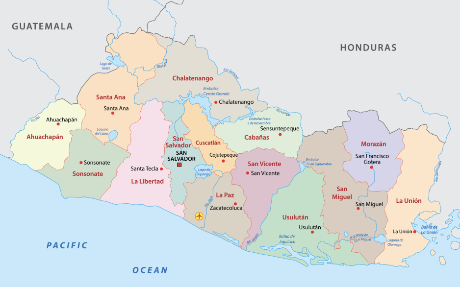
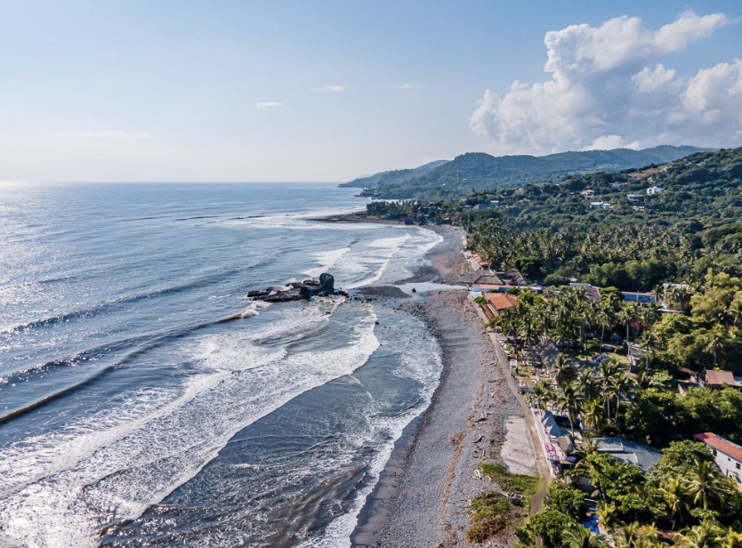
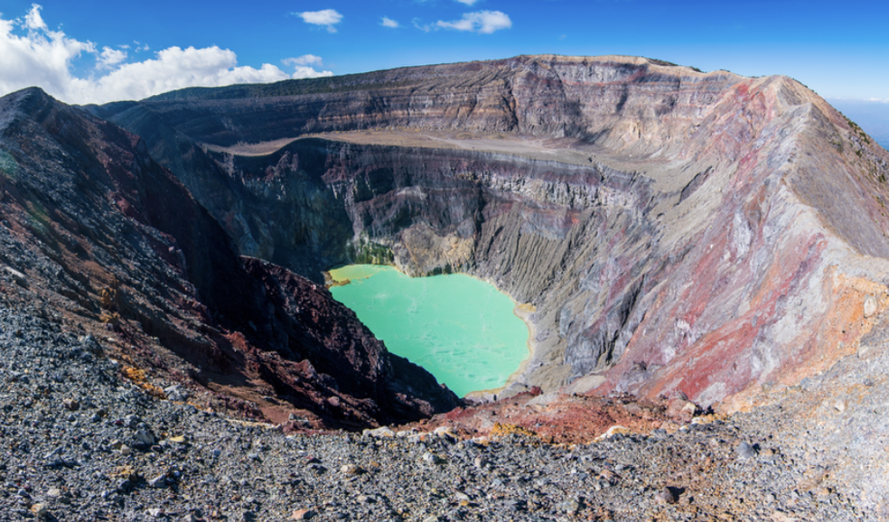

Capital: San Salvador
San Salvador es la capital de El Salvador y su plaza es "Plaza Salvador del Mundo" que tiene una estatua de Jesús en un globo terráqueo.
vacaciones
El Salvador celebra el Día de la Independencia, Semana Santa, Día de los Fieles Difuntos y Navidad
lugares populares
Los lugares populares en El Salvador incluyen El Tunco, el Volcán Santa Ana y Santa Ana.
 deportes populares
Los deportes populares incluyen fútbol, surf, baloncesto y tenis.